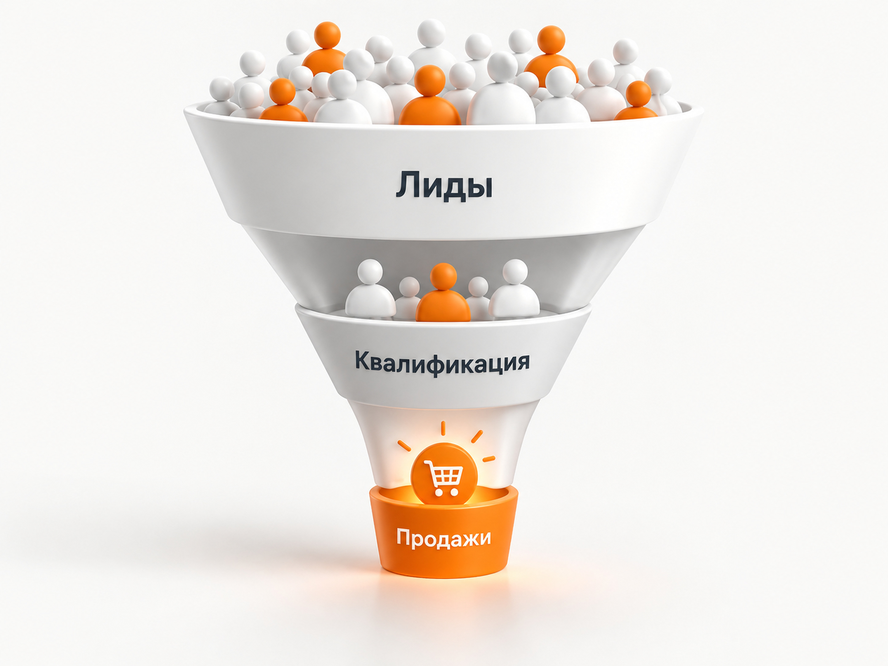

Блог о платном трафике
Продвижение онлайн-курсов китайского языка в 2026 году: инструкция и прогноз
В 2026 году китайский язык - одна из интересных ниш онлайн-образования в России. Спрос растет, аудитория достаточно широкая, а сам продукт хорошо подходит как для поисковой рекламы, так и для более длинных воронок через бесплатные уроки, вебинары, Telegram и контент.
Но я бы не воспринимал рост спроса как гарантию дешевых клиентов. В этой нише легко получить сотни недорогих регистраций на бесплатный материал и при этом не окупить рекламу. Поэтому продвижение онлайн-курсов китайского языка нужно строить от всей экономики: реклама -> лид -> квалифицированный лид -> пробное занятие или вебинар -> оплата -> повторные покупки.
Основным платным каналом я бы в первую очередь рассматривал Яндекс Директ. Он позволяет работать с уже сформированным спросом: человек сам ищет курсы китайского языка, подготовку к HSK или занятия для ребенка. Дополнительно можно тестировать VK Рекламу, Telegram Ads, посевы в тематических каналах и Авито.
Ниже разберу, как я бы строил продвижение такой онлайн-школы в России в 2026 году и какие цифры закладывал бы в первоначальный прогноз.
Почему курсы китайского языка сейчас перспективны
Рост интереса к китайскому подтверждается не только отдельными школами.
В мае 2026 года сообщалось, что более 100 тысяч россиян изучают китайский непосредственно в России, еще около 20 тысяч проходят образовательные программы в Китае.
По анализу спроса Skyeng, опубликованному в апреле 2026 года, китайский получил 26% среди рассматриваемых иностранных языков и оказался впереди французского, итальянского, испанского, немецкого, японского и корейского. Эти данные относятся к аудитории конкретной образовательной платформы, поэтому переносить 26% на весь российский рынок нельзя, но тренд они показывают хорошо.
Еще один показатель - реальное потребление образовательного контента. По данным МегаФона, в Москве трафик на платформах изучения китайского языка в марте 2026 года оказался на 50% выше уровня сентября 2025 года. В Новосибирской области мартовский трафик вырос в 6,5 раза относительно марта 2025 года. Региональные цифры нельзя считать общероссийской статистикой, но направление изменения спроса очевидно.
У языкового образования в целом тоже есть устойчивый спрос. По данным опроса Яндекса за май 2025 года, 28% опрошенных проходили обучение иностранным языкам.
То есть проблема онлайн-школы китайского языка в 2026 году скорее не в отсутствии аудитории. Основная задача - правильно разделить этот спрос и предложить каждому сегменту подходящий продукт.
Не рекламируйте просто «курсы китайского»
За одинаковым запросом могут стоять совершенно разные задачи.
Я бы как минимум разделил аудиторию на несколько направлений:
- китайский с нуля для взрослых;
- подготовка к HSK;
- китайский для детей и подростков;
- китайский для работы и бизнеса с Китаем;
- язык для поездок и жизни в Китае;
- поступление в китайский вуз;
- продолжающие обучение после начального уровня.
Это не формальная сегментация ради красивой маркетинговой презентации.
Человеку, который через несколько месяцев сдаёт HSK, нужен понятный план подготовки к конкретному уровню. Предпринимателю важнее переговоры, деловая лексика и практическое применение. Родитель выбирает преподавателя, программу и безопасный формат для ребенка. Новичок часто вообще сомневается, сможет ли разобраться с тонами и иероглифами.
Одна универсальная посадочная страница и одно объявление «Научим китайскому онлайн» плохо отвечают сразу на все эти мотивы.
В свежем кейсе онлайн-школы китайского языка Twins Chinese отдельно отмечается проблема смешивания начинающих и продолжающих учеников. После изменения последовательности продуктов и отдельной работы с разными уровнями выручка школы выросла в два раза за два месяца без увеличения рекламных расходов.
Поэтому первый этап продвижения - не запуск рекламного кабинета, а сегментация продукта.
Что предлагать в рекламе
Для холодной или даже относительно теплой аудитории я бы редко начинал с предложения сразу купить большой курс.
Изучение китайского требует времени, а перед покупкой человеку хочется проверить преподавателя, формат и собственную способность заниматься этим языком.
Хорошими точками входа могут быть:
- полноценный бесплатный пробный урок;
- определение уровня китайского;
- диагностика и персональный план обучения;
- короткий вводный курс;
- открытый урок;
- подготовительный интенсив;
- гайд или занятие по подготовке к HSK.
Сама механика сейчас активно используется крупными игроками.
Например, летом 2026 года Skyeng продвигал китайский через Telegram с коротким бесплатным мини-курсом. Архив рекламы фиксирует 34 рекламных креатива и размещение в 85 тематических каналах за период с конца июня по начало августа.
В опубликованном кейсе продвижения школы китайского языка на Авито использовалась бесплатная диагностика, после которой потенциального ученика переводили дальше по воронке.
Но бесплатный продукт должен быть частью продажи, а не самостоятельной целью рекламы. Если школа прекрасно собирает бесплатников, но потом практически никого не переводит в оплату, дешевый CPL ничего не дает.
Яндекс Директ для онлайн-курсов китайского языка
Яндекс Директ я бы использовал как основной канал на старте, особенно если у школы еще нет большой собственной аудитории.
Причина простая: здесь можно работать с человеком в момент, когда потребность уже сформирована.
Пользователь вводит «курсы китайского языка онлайн», «китайский язык с нуля онлайн», «подготовка HSK онлайн» или ищет занятия для ребенка. Нам не нужно сначала убеждать его в том, что китайский вообще стоит изучать.
Поэтому поисковый трафик принципиально отличается от рекламы, которая появляется у человека между постами или видео.
Как я бы собирал структуру рекламы
В 2026 году нет смысла дробить небольшой проект на десятки микрокампаний.
Я бы сначала разделил самые разные по смыслу направления: общий китайский для взрослых, HSK, дети и несколько действительно крупных отдельных продуктов, если они существуют.
Внутри уже можно работать с группами запросов и объявлениями.
Для детального управления сейчас используется Единая перфоманс-кампания. Через нее можно работать с Поиском, РСЯ и другими доступными размещениями. При небольшом объеме статистики можно параллельно тестировать Мастер кампаний.
Как настроить рекламу в Яндекс Директ в 2026 году
На старте я бы не пытался одновременно проверить 15 разных аудиторий. Чем сильнее раздроблена статистика, тем меньше данных получает каждая автоматическая стратегия.
В одном из моих проектов по онлайн-образованию, фотошколе, именно укрупнение кампаний позволило масштабировать поток регистраций. За три месяца получили 5794 регистрации со средней стоимостью 126,40 ₽. Это старый кейс и совсем другая ниша, поэтому переносить цену регистрации на китайский язык в 2026 году нельзя. Полезен здесь сам принцип: алгоритмам проще работать, когда конверсий достаточно и они не разбросаны по множеству маленьких кампаний.
С чего начинать на Поиске
В первую очередь я бы собирал сформированный коммерческий спрос.
Например:
«курсы китайского языка онлайн», «школа китайского языка онлайн», «обучение китайскому онлайн», «китайский язык для начинающих», «подготовка к HSK», «китайский для детей онлайн».
Дальше запросы нужно смотреть уже по фактической частотности и поисковым фразам.
Информационные запросы вроде «как самостоятельно выучить китайский» или «сложно ли учить китайский язык» я бы не смешивал с горячим поисковым спросом.
Они могут прекрасно работать в SEO, РСЯ или через бесплатный образовательный продукт, но человек находится на другом этапе выбора.
РСЯ
РСЯ я бы подключал после Поиска или одновременно с ним, если бюджет позволяет нормально протестировать оба направления.
Здесь можно работать с более широкой аудиторией:
человек интересуется Китаем, путешествиями, HSK, поступлением, иностранными языками, уже посещал сайт школы или взаимодействовал с бесплатными материалами.
Для РСЯ особенно важен входной оффер. Предложение сразу купить обучение за десятки тысяч рублей обычно сложнее, чем приглашение пройти диагностику, пробный урок или короткий бесплатный курс.
На какую цель обучать рекламу
Самая опасная ошибка онлайн-школы - оптимизировать кампании по самой дешевой регистрации и не смотреть дальше.
Допустим, одна кампания приносит регистрации по 700 ₽, другая по 1 100 ₽.
На уровне рекламного кабинета первая выглядит лучше.
Но если из первой покупает один человек из ста, а из второй десять, реальная экономика полностью меняется.
Поэтому я бы передавал из CRM обратно в Метрику как минимум:
регистрацию -> квалифицированный лид -> запись на урок -> состоявшийся урок -> оплату.
В Яндекс Директе лучше использовать максимально глубокое событие, по которому одновременно набирается достаточно статистики.
Если оплат всего три в месяц, обучать кампанию непосредственно на них будет сложно. Тогда можно использовать более частую промежуточную цель, например квалифицированную запись на пробный урок.
Для автоматических стратегий практический ориентир - примерно 15-20 качественных конверсий в неделю. При меньшем количестве данных алгоритму становится сложнее обучаться стабильно.
Какую стратегию выбрать в Яндекс Директ
Офлайн-конверсии в Яндекс Директ и Метрике
Именно обратная передача качества лидов особенно важна для онлайн-образования. Иначе система постепенно учится находить людей, которые легко оставляют бесплатную заявку, а не тех, кто впоследствии покупает обучение.
Сколько может стоить реклама курсов китайского языка
Здесь я бы сразу отказался от утверждений вроде «средний лид по рынку стоит 900 ₽».
Такого универсального показателя нет.
В одном кейсе лидом называется регистрация на бесплатный вебинар. В другом - сообщение в Авито. В третьем - заявка на пробное занятие. В четвертом - уже подтвержденный контакт.
Сравнивать эти показатели напрямую нельзя.
Но несколько ориентиров из открытых кейсов использовать можно.
| Источник | Результат | Что учитывать |
|---|---|---|
| Яндекс Директ, школа китайского языка | 5,57 млн ₽ расходов, 7 966 регистраций, около 700 ₽ за регистрацию | Данные за более ранний период, воронка через автовебинар |
| Яндекс Директ, языковые школы, кейсы 2026 | опубликованы результаты около 438-1 310 ₽ за заявку | Другие языки и разные воронки, использовать только как ориентир |
| Авито, китайский язык | 702 ₽ на старте, затем 233 ₽ за лид | Событие - контакт через Авито, не продажа |
| VK, китайский язык | 167 ₽ средняя стоимость лида за длительный период | Среднее за несколько лет, верхняя часть воронки |
| Telegram | по китайскому есть активные рекламные кампании крупных школ, но надежного свежего среднего CPL я не нашел | Нужен отдельный тест конкретных каналов и офферов |
В крупнейшем опубликованном кейсе именно по китайскому языку через Яндекс Директ расходы за 13 месяцев составили 5 573 779 ₽, получено 7 966 регистраций и 22 652 616 ₽ выручки. Заявленный ROMI - 306%. Это дает примерно 700 ₽ за регистрацию. Кейс относится к более раннему периоду и не является прогнозом на 2026 год, но хорошо показывает, что Директ способен масштабироваться в этой нише при рабочей воронке.
В свежих опубликованных кейсах языковых школ в 2026 году встречаются показатели 438 ₽ за заявку на обучение английскому и 1 310 ₽ для подготовки к IELTS.
Есть и пример языковой школы, где стоимость заявки из Директа после оптимизации снизилась с 1 800 до 720 ₽.
Поэтому для нового проекта китайского языка я бы не обещал клиенту «лиды по 700 ₽». Но использовать диапазон опубликованных результатов как стартовую точку для медиаплана вполне можно.
Какой прогноз я бы заложил на 2026 год
Если речь идет о новой онлайн-школе или проекте без свежей статистики, для Яндекс Директа я бы использовал следующий рабочий прогноз.
Это не «средние показатели рынка», а диапазоны для первоначального планирования, которые после первых нескольких недель нужно заменить фактическими данными проекта.
| Показатель | Рабочий ориентир на тест |
|---|---|
| Регистрация на бесплатный урок, вебинар или другой низкопороговый продукт | 700-1 500 ₽ |
| Заявка или запись на полноценный пробный урок | 1 500-3 000 ₽ |
| Квалифицированный лид | примерно 2 500-5 000 ₽ |
| Минимальный тестовый бюджет Директа | около 100 000 ₽ |
| Более комфортный бюджет для Поиска + дополнительных тестов | 150 000 ₽ и выше |
Почему я закладываю диапазон шире опубликованных красивых кейсов?
Потому что новый проект сначала оплачивает обучение собственной рекламной системы. Еще неизвестно, какой сегмент лучше покупает, какой оффер сильнее, насколько хорошо работает сайт и что происходит с заявками после передачи менеджерам.
Если через месяц реальная регистрация стоит 800 ₽ - отлично. Если прогноз изначально строился только на 700 ₽ и фактический результат оказался 1 400 ₽, это не обязательно означает, что реклама провалилась. Нужно смотреть дальнейшие продажи.
Пример прогноза при бюджете 150 000 ₽
Допустим, считаем не дешевую регистрацию на гайд, а заявку или запись на пробное занятие.
| Сценарий | CPL | Лиды | Конверсия лид -> продажа | Продажи | CAC |
|---|---|---|---|---|---|
| Сильный | 1 500 ₽ | 100 | 10% | 10 | 15 000 ₽ |
| Базовый | 2 000 ₽ | 75 | 8% | 6 | 25 000 ₽ |
| Слабый | 3 000 ₽ | 50 | 5% | 2-3 | 50 000-75 000 ₽ |
Это именно расчетная модель.
Реальные 5%, 8% или 10% нужно брать не из таблицы в интернете, а из собственной CRM.
Конверсия лида в продажу: какая считается нормальной
Например, если курс стоит 25 000 ₽ и клиент покупает его один раз, CAC в 25 000 ₽ очевидно выглядит плохо.
Но языковое образование обычно позволяет строить LTV: следующий уровень, разговорная практика, подготовка к HSK, индивидуальные занятия и другие программы.
В одном из опубликованных кейсов школы китайского языка средний чек составлял около 20-25 тыс. ₽, а сама программа была ступенчатой: после первой ступени ученику продавали продолжение обучения.
Поэтому в такой нише я бы обязательно считал не только первый платеж, но и LTV ученика.
Посадочная страница для рекламы
Директ не сможет компенсировать слабый сайт.
Под каждое крупное направление желательно иметь либо отдельную страницу, либо страницу, которая действительно отвечает на конкретную задачу пользователя.
На первом экране должно быть понятно:
кто обучается, чему именно человек научится, в каком формате проходит обучение, сколько длится программа и что ему предлагают сделать сейчас.
Для начинающих можно показывать простой вход через пробное занятие.
Для HSK - уровень экзамена, программу подготовки и опыт преподавателей.
Для родителей - возраст ребенка, формат занятий, преподавателя и результаты обучения.
Для делового китайского - рабочие ситуации, для которых готовят человека.
Отдельно нужны доказательства: реальные преподаватели, отзывы, результаты учеников, примеры занятий и сама программа.
Яндекс в рекомендациях для языковых школ тоже отдельно отмечает необходимость разделять аудиторию по целям обучения и подбирать точные запросы под конкретную услугу.
Авито
Авито я бы обязательно протестировал как дополнительный источник.
Для языковых занятий формат площадки подходит: пользователь уже находится в режиме выбора услуги и может быстро начать переписку.
В кейсе онлайн-школы китайского языка стоимость лида в первый месяц составляла 702 ₽. После оптимизации в июне показатель снизился до 233 ₽. Использовались подготовка к HSK, крупные города и бесплатная диагностика.
Но здесь особенно нельзя сравнивать CPL с Директом напрямую.
Сообщение в Авито и заполненная заявка на пробный урок на сайте - разные события.
Поэтому смотреть нужно дальше: сколько контактов перешли в нормальный диалог, сколько записались и сколько оплатили обучение.
VK Реклама
VK имеет смысл использовать для расширения воронки, особенно если школа умеет продавать через бесплатные занятия, практикумы или вебинары.
В длинном кейсе продвижения китайского языка опубликована средняя стоимость лида 167 ₽ при 135 тысячах лидов за пять лет. Средний чек курса составлял 20-25 тыс. ₽.
Но я бы ни в коем случае не ставил 167 ₽ в прогноз на 2026 год.
Во-первых, это средняя цена за много лет.
Во-вторых, речь идет о верхней части воронки.
В-третьих, рекламный рынок за это время сильно изменился.
Зато кейс подтверждает саму рабочую модель: холодная реклама -> бесплатный практикум -> прогрев -> продажа первой ступени курса.
Для VK это выглядит значительно естественнее, чем предложение сразу купить большой курс.
Telegram Ads и посевы
Для китайского Telegram особенно интересен из-за большого количества нишевых каналов о языке, учебе, путешествиях и жизни в Китае.
То, что канал активно используется рынком, видно по рекламной активности крупных школ. Например, китайское направление Skyeng летом 2026 года было замечено в 85 Telegram-каналах и использовало десятки вариантов рекламных материалов.
Здесь можно проверять две модели.
Первая - Telegram Ads.
Вторая - прямые размещения в конкретных тематических каналах.
В Telegram Ads я бы не пытался сразу купить максимальный объем. Сначала нужны десятки небольших тестов каналов и текстов.
Такой подход я использовал, например, при продвижении онлайн-курсов йоги и цигун. Из множества протестированных размещений большая часть была отключена, а бюджет затем концентрировался на тех каналах, где подтверждалась нормальная стоимость регистрации или подписки.
Кейс Telegram Ads для курсов йоги и цигун
Для китайского логика может быть похожей: тестировать каналы преподавателей, сообщества студентов, жизнь в Китае, HSK, китайскую культуру, путешествия, ВЭД и смежные тематики.
SEO
SEO здесь тоже имеет смысл, потому что вокруг китайского языка существует огромный информационный спрос.
Пользователь редко проходит путь «сегодня первый раз задумался о китайском -> через пять минут купил год обучения».
Он может сначала искать:
как начать учить китайский, сколько времени нужно для HSK 1, как работают тоны, сложно ли учить иероглифы, какой уровень нужен для учебы в Китае, китайский для бизнеса, китайский ребенку.
Из таких запросов можно строить информационный раздел, а затем переводить часть аудитории в бесплатный урок или диагностику.
При этом коммерческие страницы должны отдельно отвечать на запросы вроде «курсы китайского языка онлайн», «подготовка к HSK» и «китайский для детей».
SEO не заменит Директ на старте, потому что результаты появляются значительно медленнее. Но через несколько месяцев хороший информационный раздел способен стать постоянным источником теплой аудитории.
Воронка важнее стоимости клика
У онлайн-школ часто возникает одна и та же ошибка: маркетинг обсуждает стоимость лида, отдел продаж обсуждает продажи, а продукт смотрит на количество учеников. Между этими цифрами нет единой системы.
Я бы строил один отчет:
расход -> клики -> лиды -> квалифицированные лиды -> записи -> состоявшиеся уроки -> оплаты -> выручка -> повторные оплаты.
Тогда можно нормально диагностировать проблему.
Дорогие клики - вопрос рекламы.
Много кликов и мало заявок - вопрос связки реклама + посадочная страница.
Много дешевых заявок и мало квалифицированных - проблема качества трафика или слишком легкой формы.
Много хороших лидов и мало записей - нужно смотреть обработку.
Люди доходят до уроков, но не покупают - реклама уже может быть вообще ни при чем.

Не забывайте про удержание ученика
Для китайского языка привлечение первой оплаты - только часть экономики.
Язык невозможно полноценно освоить за несколько занятий. Хороший ученик может заниматься с проектом месяцами или годами.
Поэтому очень важны:
следующий уровень обучения, подготовка к экзамену, разговорные клубы, индивидуальные занятия, занятия с носителями, дополнительные программы.
Из-за этого допустимый CAC школы с хорошим удержанием может быть значительно выше, чем у проекта, где каждый человек покупает только один небольшой курс.
Именно поэтому сравнивать две школы только по CPL нельзя.
Типичные ошибки продвижения
Продавать один продукт всем. Начинающий взрослый, школьник и человек с HSK 4 требуют разной коммуникации.
Оценивать рекламу по регистрациям. Дешевый лид может оказаться совершенно бесполезным после квалификации.
Слишком рано дробить Яндекс Директ. Пятьдесят маленьких кампаний часто получают меньше полезных данных, чем несколько крупных.
Начинать с очень широкого холодного спроса. Сначала логичнее проверить людей, которые уже ищут обучение.
Вести весь трафик на главную страницу школы. Запрос и посадочная страница должны совпадать.
Постоянно менять автоматическую стратегию. Алгоритмам нужно время и стабильный поток данных.
Не передавать продажи обратно в аналитику. В результате рекламная система знает, кто оставляет формы, но ничего не знает о реальных учениках.
Масштабироваться до подтверждения экономики. Сначала нужно доказать, что воронка приносит деньги хотя бы на небольшом объеме.
Как я бы запускал продвижение с нуля
Мой порядок выглядел бы так.
- Посчитать средний чек, маржинальность, повторные продажи и допустимую стоимость нового ученика.
- Разделить аудиторию хотя бы на несколько крупных продуктов: начинающие, HSK, дети и другие действительно значимые направления.
- Выбрать основной входной оффер. Например, полноценный пробный урок или диагностику.
- Сделать посадочные страницы под самые важные сегменты.
- Настроить Метрику, цели, CRM и передачу дальнейших статусов.
- Запустить Яндекс Директ сначала по сформированному поисковому спросу.
- Получить первые данные по качеству заявок.
- Добавить РСЯ, ретаргетинг и дополнительные аудитории.
- Параллельно небольшими бюджетами проверить Авито, VK или Telegram.
- Через несколько недель сравнивать уже не CPL, а стоимость квалифицированного лида и ученика.
- Масштабировать только связки, где подтверждается нормальная экономика.
- Параллельно развивать SEO и собственную аудиторию, чтобы школа постепенно меньше зависела от одной рекламной площадки.
При небольшом бюджете я бы лучше качественно проверил один оффер и Яндекс Директ, чем распределил 100 000 ₽ между пятью рекламными системами и в итоге нигде не получил достаточной статистики.
Какой бюджет закладывать
Для полноценного теста Яндекс Директа по всей России я бы ориентировался примерно от 100 000 ₽ рекламного бюджета.
При 150 000 ₽ уже проще отдельно проверить Поиск, сетевые размещения и несколько ключевых сегментов.
Если доступно только 30-50 тысяч рублей, я бы максимально сужал задачу: один основной продукт, одно предложение и сформированный поисковый спрос.
После этого бюджет определяется уже не желанием «потратить 200 тысяч», а экономикой.
Если новый ученик приносит проекту 60 000 ₽ валовой прибыли за весь период обучения и школа готова отдавать 20 000 ₽ за его привлечение, это одна модель.
Если весь доход с ученика составляет 15 000 ₽, возможности рекламной системы будут совершенно другими.
Сначала определяется допустимый CAC. Затем из реальной конверсии рассчитывается допустимый CPL.
А уже после этого становится понятно, сколько школа может платить Яндексу, VK или другой площадке.
Что учитывать при рекламе в России
Интернет-реклама в России должна маркироваться. Для Яндекс Директа значительная часть технической работы автоматизирована самим Яндексом через ОРД, но данные рекламодателя должны быть заполнены корректно.
Кроме того, с апреля 2025 года действует обязательный сбор с доходов от распространения интернет-рекламы в размере 3%. Кто именно платит его в конкретной цепочке, зависит от договора и роли участника. При планировании размещений напрямую у блогеров и Telegram-каналов это тоже нужно учитывать.
Итог
Продвижение онлайн-курсов китайского языка в 2026 году я бы строил вокруг Яндекс Директа, потому что здесь уже существует заметный сформированный спрос.
Но сам рекламный кабинет - только начало.
Нормальная система выглядит так:
сегмент аудитории -> конкретный оффер -> подходящая посадочная страница -> Яндекс Директ -> квалификация -> пробное занятие -> продажа -> повторное обучение.
Дополнительно можно масштабироваться через VK, Telegram, Авито и SEO.
По опубликованным кейсам стоимость первичного действия может отличаться в несколько раз: от нескольких сотен рублей за контакт или регистрацию до нескольких тысяч за более глубокую заявку. Поэтому я бы не пытался найти одну «среднюю цену лида на китайский язык».
Главная цифра для школы - стоимость реально привлеченного ученика и прибыль, которую он приносит за весь период обучения.
Если эта экономика сходится, трафик можно масштабировать. Если нет - снижение CPL само по себе проблему не решит.